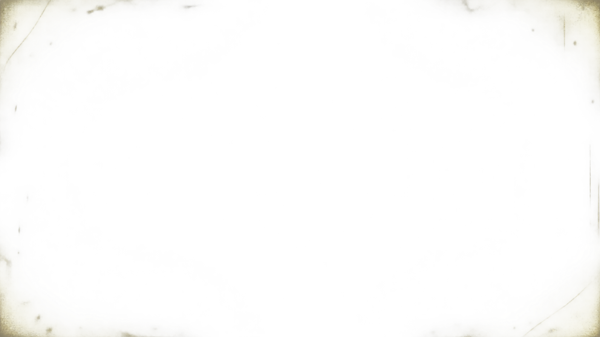
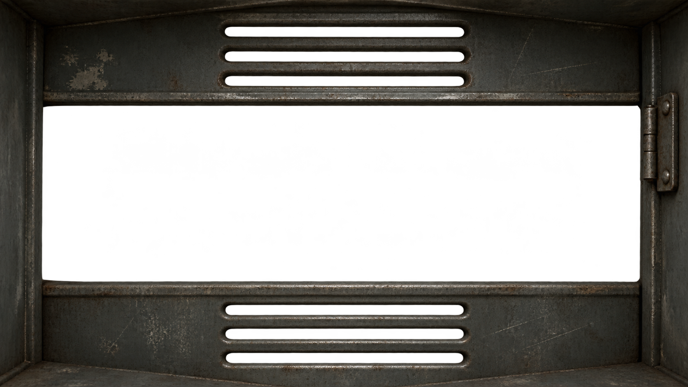
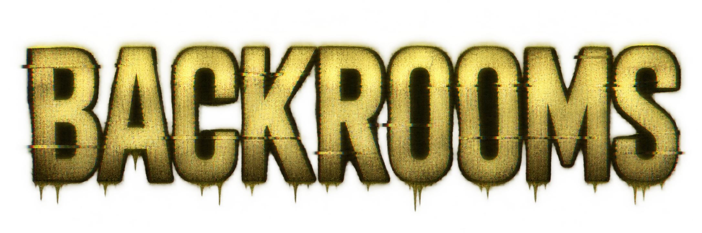

追跡・突然の音・暗い表現があります。
床の矢印と画面上のコンパスをたどって出口へ。扉が開かなければ E で調べ、3か所の配電盤で E を約1.2秒長押ししてブレーカーを上げます。
捕まったら SPACE を連打（押しっぱなしでも可）。振りほどけるのは2回までです。
走るのをやめると持久力が回復します。拾った水は数字キーで選び、Q または I から使えます。
視点はマウスまたは ↑ ↓ ← →。マウスが固定されないときは画面を押したままドラッグ。
敵も時間も、止まっています。
やり直し・タイトルへ戻ると、今回の探索はリセットされます。マウスが固定されないときはドラッグ、または矢印キーで視点を操作。
本作は端末内だけで利用する非公開プロトタイプです。素材ファイルを含むフォルダーを公開・配布しないでください。
CC BY 4.0 ↗ · Sketchfab license ↗音には上記の既存素材を使用しています。詳細は AUDIO.md を参照してください。